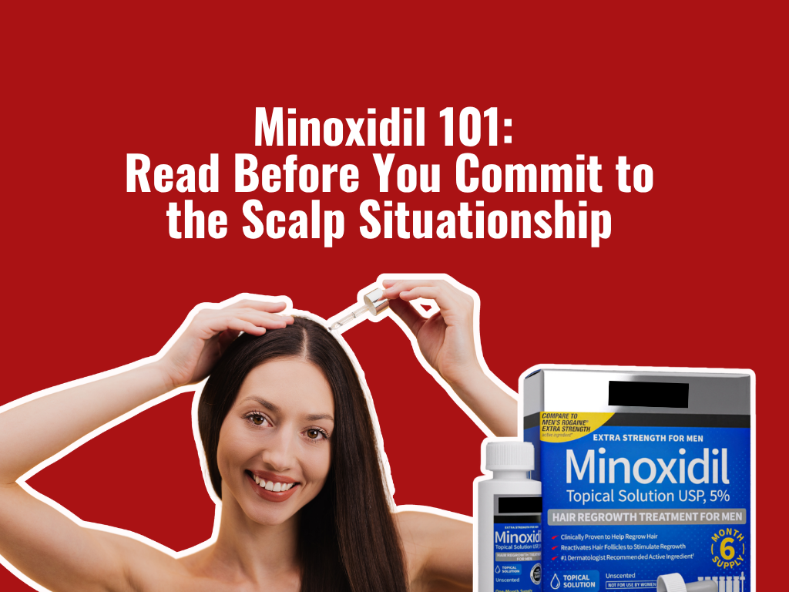

Every hair-loss conversation eventually lands on the same answer: minoxidil.
Use it. Stay consistent. Give it time. Trust the process.
That advice is not wrong. Minoxidil can help some people grow thicker, longer hair, especially in pattern hair loss. It has real clinical history, real users, and real results.
The problem is the way the beauty industry talks about it.
Minoxidil is often treated like a clean little hair-growth hack. In reality, it is an old blood-pressure drug that became famous because people started growing extra hair. Cute origin story. Slightly chaotic science project.
Here is what is actually happening, broken down without the marketing fog.
The Part Social Media Usually Skips
1. Minoxidil was not designed as a modern hair-growth molecule.
Minoxidil began as a blood-pressure medication. Hair growth showed up as the unexpected side effect that became the business opportunity.
The deliciously awkward part is that everything around minoxidil became modern. The packaging changed. The foam arrived. The influencer scalp routine arrived. The active ingredient itself stayed almost frozen in time.
Imagine walking into a 2026 board meeting with a computer from 1988 and calling it the gold standard because the keyboard still clicks. How delusional.
2. The mechanism is still not perfectly clean.
The simple explanation is blood flow. Minoxidil is a vasodilator, meaning it helps open blood vessels. It may also help shift hairs from the resting phase into the growth phase and support thicker-looking hairs in pattern hair loss.
But hair loss is bigger than circulation.
Hair thinning can involve hormones, follicle miniaturization, inflammation, stress, postpartum changes, traction, medications, nutrition, autoimmune issues, and scalp health.
Minoxidil pulls one important lever. Hair biology has a whole control panel.
3. The "forever use" clause is real.
If minoxidil works for you, the maintenance part matters. The label says continuous use is needed to keep hair regrowth, and stopping may lead to losing newly regrown hair within three to four months.
That is not a casual serum. That is a subscription model for your follicles.
4. Side effects are not random drama.
Scalp irritation makes sense with topical formulas. Facial fuzz makes sense when a hair-growth signal migrates or goes systemic. Dizziness, swelling, rapid heartbeat, or faintness make sense when the active has blood-pressure biology behind it.
The chaos has a pattern. The marketing just prefers the baby-hair photos.
Some complaints come from the active itself. Minoxidil affects blood vessels, and when enough of it is absorbed beyond the scalp, rare systemic symptoms can show up, including headache, dizziness, fast heartbeat, swelling, and vision changes.
Then there is the formula problem. Liquid minoxidil often needs a delivery base that helps the active move through skin, and that base can make the scalp angry: itching, burning, dryness, flaking, redness. The whole anti-luxury experience.
Formula irritation
Greasy or crunchy texture. Itching, flaking, redness from the delivery base, not even the active ingredient.
Systemic absorption
Headache, dizziness, fast heartbeat, swelling, vision changes. Rare but real, and tied to blood-pressure biology.
Migration
Peach fuzz in places nobody ordered. Happens when product drips, transfers to a pillowcase, or absorbs systemically. ISHRS notes facial or body hair can come from contact or bloodstream absorption.
Under-eye puffiness
Some users notice puffiness that reads as darker-looking circles. A fluid-retention signal worth paying attention to.
A flaky scalp that ruins a blowout. A greasy or crunchy texture from the formula. Peach fuzz in places nobody ordered. Under-eye puffiness that some users read as darker-looking circles.
These side effects are not random beauty dramas. They follow the logic of a vasodilator being used as a hair-growth active.

Under-eye puffiness

Peach fuzz
Greasy formula residue

Flaky scalp
Why the Minoxidil Story Is More Complicated Than the Label
| What You Hear | What It Actually Means | Beauty Translation |
|---|---|---|
| "It grows hair." | Minoxidil can help stimulate hair growth in certain types of baldness, but the exact way it works is still not fully known. | It can send a growth signal. It is not a magic reset button that suddenly brings you back to a state of consistently growing hair. |
| "It is FDA-approved." | Topical minoxidil is approved for specific pattern hair-loss use cases. Labels warn that it may not help sudden, patchy, pregnancy-related, thyroid-related, nutritional, or scarring hair loss. | The label has boundaries. TikTok usually does not. |
| "Just stay consistent." | Continuous use is needed to maintain results. If you stop, newly regrown hair may be lost within a few months. | This is a long-term relationship, not a weekend situationship. |
| "More product works faster." | Using more often or using larger doses has not been shown to speed up growth and may increase side effects. | Your scalp is not asking for extra sauce. |
| "Oral minoxidil is easier." | Oral minoxidil for hair loss is commonly discussed, but it is used off-label. It is still a systemic blood-pressure medication, even at lower doses. | A pill is convenient. A pill also travels everywhere. |
Topical vs. Oral Minoxidil: The Beauty Translation
| Topical Minoxidil | Oral Minoxidil | |
|---|---|---|
| How you use it | Applied directly to the scalp, usually as a solution or foam. | Taken as a prescription pill. |
| Why people like it | Accessible, over-the-counter, affordable, and backed by long use in hair loss. | Easier than applying foam or liquid every day, especially if you have longer hair or hate the styling mess. |
| The annoying part | It can feel greasy, sticky, drying, or irritating. Some formulas can cause itching, burning, flaking, or redness. | It can cause hair growth beyond the scalp, including facial or body hair. Low-dose oral minoxidil is associated with excess body hair growth in about 25% of users. |
| The serious part | Topical products can still carry warnings for chest pain, rapid heartbeat, faintness, dizziness, sudden weight gain, swelling, scalp irritation, and unwanted facial hair. | Oral minoxidil tablets carry warnings because minoxidil is a powerful antihypertensive drug and can cause serious effects such as pericardial effusion, fluid accumulation, tachycardia, and increased cardiac workload. |
| Simple analogy | Like trying to paint medicine through hair onto the scalp. | Like sending the memo through the whole body and hoping the scalp reads it first. |
What You Should Actually Know Before Using Minoxidil
| Before You Start | Why It Matters |
|---|---|
| Know what kind of hair loss you have. | Minoxidil is most commonly used for pattern hair loss. Sudden, patchy, postpartum, thyroid-related, nutritional, or scarring hair loss needs a different conversation. |
| Expect months, not days. | Hair growth is slow. Labels commonly describe several months before visible regrowth. |
| Do not over-apply. | More frequent use has not been shown to work faster and may raise side-effect risk. |
| Take oral minoxidil seriously. | It may be convenient, but it is still systemic. Blood pressure, heart history, swelling, dizziness, and other medications matter. |
| Do not stack oral and topical casually. | Combining oral and topical minoxidil can increase drug exposure without clear added efficacy. |
| Watch for red flags. | Chest pain, rapid heartbeat, faintness, dizziness, swelling, sudden weight gain, or breathing difficulty should not be brushed off as "beauty side effects." |
The Bottom Line
Minoxidil is not a scam. It can work. It has helped plenty of people. For some, it is still one of the most practical and proven options available. But the way it gets talked about is way too polished. The real story is less "miracle hair-growth serum" and more "old blood-pressure drug with useful hair-growth effects, annoying application issues, a long-term commitment clause, and side effects the internet likes to whisper about." That does not make minoxidil bad. It makes the category overdue for a more honest conversation. Hair loss is emotional. Consumers deserve more than "just use minoxidil and be patient."
They deserve the full label energy.